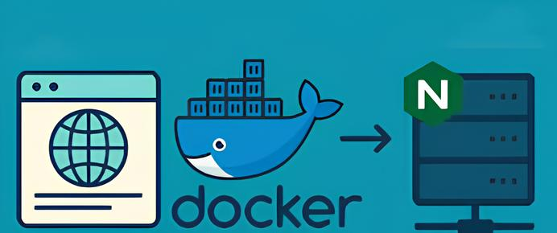

How to Deploy a Web Application Using Docker and NGINX on Your Own Server

|
Vishnu Satheesh |
#webdev #devops
Deploying a web application doesn't need to be a complicated process. With Docker, NGINX, and your own server, you can get your app live in no time.
In this blog, I'll show you step-by-step how to serve your app with a domain, route traffic with NGINX, and run it all inside a Docker container. This guide is specifically tailored for a Linux-based server.
Step 1: Setup docker
First, let's set up Docker. I'm using a simple React app as an example, but feel free to use any application or codebase of your choice. Create a Dockerfile in your project directory to define how your app should be containerized.
FROM node:20-alpine WORKDIR /app COPY package*.json ./ RUN npm install COPY . . CMD ["npm", "start"]
Step 2: Build and Run the Docker Container (on your server)
Once you've created your Dockerfile, the next step is to build your Docker image and run it to make sure everything is working as expected.
Conclusion
Deploying your web application using Docker and NGINX on your own server might sound intimidating at first, but once you break it down, it's quite manageable.
By containerizing your app, setting up NGINX as a reverse proxy, and linking everything together on your VPS, you gain full control over your deployment process.
Top comments (0)